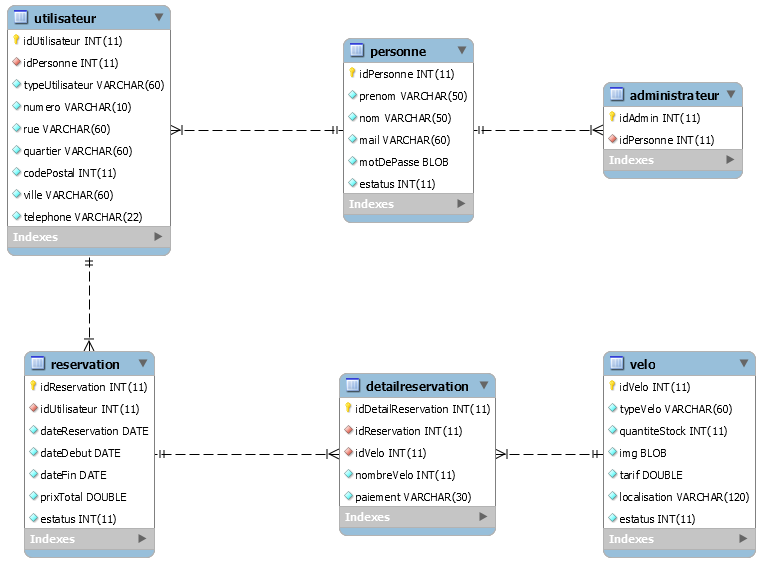

1.1 Choix du développement
-
Tout d’abord, il faut choisir les technologies à utiliser pour la réalisation du projet, ils doivent comprendre en tant que le développement de la progressive web app, la base de données et le capteur de température et détection en cas d’une chute des vélos.
Développement PWA
Onsen UI :
 Onsen UI est un Framework open source pour créer des applications Web
progressives (PWAs) et des applications hybrides. Il est basé sur PhoneGap et Cordova. Les
applications Web progressives (PWAs) sont créées avec le but d’offrir une fiabilité et une
installation en atteignant n’importe qui, n’importe où et sur n’importe quel
appareil avec une base de code unique. Les applications Web progressives installées s’exécutent
dans une fenêtre distincte plutôt que dans un onglet du navigateur.
Onsen UI est un Framework open source pour créer des applications Web
progressives (PWAs) et des applications hybrides. Il est basé sur PhoneGap et Cordova. Les
applications Web progressives (PWAs) sont créées avec le but d’offrir une fiabilité et une
installation en atteignant n’importe qui, n’importe où et sur n’importe quel
appareil avec une base de code unique. Les applications Web progressives installées s’exécutent
dans une fenêtre distincte plutôt que dans un onglet du navigateur.Onsen UI peut être utilisé avec plusieurs frameworks en tant de JavaScript, AngularJS (1, 2+), ReactJS et JQuery. Grâce à Onsen UI, des applications mobiles peuvent être créées à l’aide de technologies Web en tant de HTML5, CSS et JavaScript. Ces dernières étant choisies pour le développement de l’application. De même, l’utilisation de la librairie Bootstrap sera largement utilisée dans le projet, afin d’obtenir de meilleurs résultats dans l’interface web ou mobile, tout en respectant à tout moment un design responsif.
Gestionnaires de Bases de Données
MySQL :
 C’est un système open source pour la gestion de base de données relationnelle
(RDBMS). Une base de données relationnelle permet d’entreposer et d’organiser les données
structurées sous forme de tableaux liés entre eux. Nous pouvons définir MySQL en tant qu’un
Système de Gestion de Base de Données (SGBD), c’est-à-dire, un logiciel capable de manipuler les
données d'une base de données, parmi les actions disponibles : créer, lire, mettre en jour et
supprimer (CRUD en anglais).
C’est un système open source pour la gestion de base de données relationnelle
(RDBMS). Une base de données relationnelle permet d’entreposer et d’organiser les données
structurées sous forme de tableaux liés entre eux. Nous pouvons définir MySQL en tant qu’un
Système de Gestion de Base de Données (SGBD), c’est-à-dire, un logiciel capable de manipuler les
données d'une base de données, parmi les actions disponibles : créer, lire, mettre en jour et
supprimer (CRUD en anglais).En raison des caractéristiques du projet à développer, il a été décidé d’utiliser une base de données relationnelle, parce que les données à gérer doivent être organisées et les tableaux seront liés les uns aux autres.
Langage côté serveur
Java :
 Pour l’échange de données entre notre application et la base de données, il est nécessaire
d’utiliser un langage côté serveur. Java a été choisi pour cela. Un langage open source qui
permet la programmation orientée objet. Pour utiliser Java, il est nécessaire d’avoir le JDK,
qui est un ensemble de bibliothèques et de
logiciels de développement pour la création d’applications en Java, ainsi que le compilateur et
l’interpréteur Java.
Pour l’échange de données entre notre application et la base de données, il est nécessaire
d’utiliser un langage côté serveur. Java a été choisi pour cela. Un langage open source qui
permet la programmation orientée objet. Pour utiliser Java, il est nécessaire d’avoir le JDK,
qui est un ensemble de bibliothèques et de
logiciels de développement pour la création d’applications en Java, ainsi que le compilateur et
l’interpréteur Java.Un IDE est également nécessaire, notre environnement de développement intégré sera Netbeans, qui nous permet de versionner le projet comme Github et fournit divers outils pour une implémentation simple.
Le projet suivra le MVC (Modèle, Vue, Contrôleur). Les classes seront définies avec java, qui sont des entités (objets) avec des attributs et des méthodes. Les contrôleurs seront le lien entre la vue et le modèle. Enfin, la vue correspond à toute la logique de l’interface de l’utilisateur.
Serveur Web
Apache :
 Pour faire fonctionner le serveur qui hébergera notre application lors de la création du projet,
il a été choisi d’utiliser Apache qui est intégré sur Netbeans.
Pour faire fonctionner le serveur qui hébergera notre application lors de la création du projet,
il a été choisi d’utiliser Apache qui est intégré sur Netbeans.Components (Objets Connectés)
Arduino :
 Tout d’abord, il faut souligner notre environnement du développement pour les components à
utiliser. Le projet sera développé dans l’IDE Arduino, c’est une plateforme ouverte (open
source) écrite en fonctions C et C ++, il est utilisé pour écrire et charger des programmes sur
des plaques compatibles avec Arduino. C’est grâce à sa facilité et l’énorme communauté qu’il
compte, que j’ai décidé choisir l’IDE Arduino.
Tout d’abord, il faut souligner notre environnement du développement pour les components à
utiliser. Le projet sera développé dans l’IDE Arduino, c’est une plateforme ouverte (open
source) écrite en fonctions C et C ++, il est utilisé pour écrire et charger des programmes sur
des plaques compatibles avec Arduino. C’est grâce à sa facilité et l’énorme communauté qu’il
compte, que j’ai décidé choisir l’IDE Arduino.
Adafruit IO :
 C’est un service cloud qui nous permet de surveiller les données et de réaliser des rayons de
contrôle en ligne et tout communiqué avec le protocole simple et efficace MQTT. Si bien, il
possède certaines limitations, mais ses avantages se trouvent dans la facilité d’utilisation, un
service gratuit et entièrement fonctionnel.
C’est un service cloud qui nous permet de surveiller les données et de réaliser des rayons de
contrôle en ligne et tout communiqué avec le protocole simple et efficace MQTT. Si bien, il
possède certaines limitations, mais ses avantages se trouvent dans la facilité d’utilisation, un
service gratuit et entièrement fonctionnel.
ESP8266 :
 Il s’agit d’une série de microcontrôleurs système sur une puce, bon marché et accessible sur le
marché (le prix est compris entre 5-10 euros). Il dispose d’une connectivité Wifi et Bluetooth.
Il supporte IPv4 et les protocoles TCP/UDP/HTTP/FTP. C’est grâce à ses points favorables qu’on a
décidé d’utiliser ce microcontrôleur pour ce projet.
Il s’agit d’une série de microcontrôleurs système sur une puce, bon marché et accessible sur le
marché (le prix est compris entre 5-10 euros). Il dispose d’une connectivité Wifi et Bluetooth.
Il supporte IPv4 et les protocoles TCP/UDP/HTTP/FTP. C’est grâce à ses points favorables qu’on a
décidé d’utiliser ce microcontrôleur pour ce projet.
Capteur DHT-22 :
 En continuant avec les composants du projet, il est nécessaire de faire usage d’un capteur de
température et d’humidité, qui nous permettra de le manipuler avec l’ESP8266 pour pouvoir
monitorer ces valeurs pendant le trajet d’un utilisateur lorsque le vélo est réservé. Après une
recherche et de réaliser une comparaison, il sera nécessaire d’utiliser le capteur DHT22.
En continuant avec les composants du projet, il est nécessaire de faire usage d’un capteur de
température et d’humidité, qui nous permettra de le manipuler avec l’ESP8266 pour pouvoir
monitorer ces valeurs pendant le trajet d’un utilisateur lorsque le vélo est réservé. Après une
recherche et de réaliser une comparaison, il sera nécessaire d’utiliser le capteur DHT22.
Ce capteur compte avec différentes lentilles de Frenel, ils permettent de regarder et envoyer l’image d’une zone de détection sur le capteur. Le prix est d’environ 3-5 euros sur le marché. Parmi les caractéristiques principales :Propriétés Caractéristiques Gamme d'humidité 0-100% (précision 2% à 5%) Gamme de température -40°C à 80°C (précision ±0.5°C) Tension d’alimentation 3V à 5V Consommation 2.5mA max Temps de verrouillage 0.2 sec à 3s selon fabricant Dimensions 25 * 15 * 9 mm
Servomoteur :
 Enfin, un servomoteur est utilisé pour effectuer la partie de détection des chutes pour chaque
vélo. L’angle de celle-ci doit être identique à l’angle d’inclinaison pendant le trajet. Ayant
90 comme angle de référence.
Enfin, un servomoteur est utilisé pour effectuer la partie de détection des chutes pour chaque
vélo. L’angle de celle-ci doit être identique à l’angle d’inclinaison pendant le trajet. Ayant
90 comme angle de référence.
Ces données seront également stockées sur la plate-forme Adafruit IO avec la température et l’humidité. Parmi les caractéristiques principales :Propriétés Caractéristiques Rotation 180° Vitesse 0,12 sec/60° sous 4,5 V Tension d’alimentation 4,5V à 6V Poids 9 g Dimensions 22,8 * 11,6 * 23,6 mm
1.2 Modélisation de la BD
-
Comme mentionné ci-dessus, le langage SQL sera employé dans le gestionnaire de base de données MySQL Workbench. Pour ce projet, il a été décidé d’utiliser un modèle entité-relation (ER), dans lequel les entités suivantes ont été définies :
- Personne : C’est l’entité père entre l’utilisateur et l’administrateur. Parmi les champs qui component cette entité, ils se trouvent le mail et le mot de passe pour pouvoir accéder à l’application. Le mot de passe est encrypté grâce à la fonction AES qui nous donne MySQL.
- Administrateur : Cette entité nous permet de stocker les informations des administrateurs de l’application, mais plus important, elle nous permet d’attribuer l’accès afin que les administrateurs puissent modifier l’informations des vélos.
- Utilisateur : Les données de l’utilisateur sont stockées dans l’entité Utilisateur avec leurs informations personnelles : adresse, téléphone et de naissance.
- Velo : Les donnés de chaque vélo sont stockées dans cette entité. Les utilisateurs seulement peuvent regarder (à manière de consulte) les types de vélo, le tarif et la localisation sur l’application.
- Reservation : Les réservations réalisées par les utilisateurs sont stockées ici, avec la date de réalisation, le période d’utilisation et le prix total.
- DetailReservation : Il faut créer une entité intermédiaire entre le vélo et la réservation afin que les utilisateurs puissent ajouter plus d’un vélo dans une même réservation. L’entité reçoive les deux id du tableau velo et reservation en tant de foreign keys.
